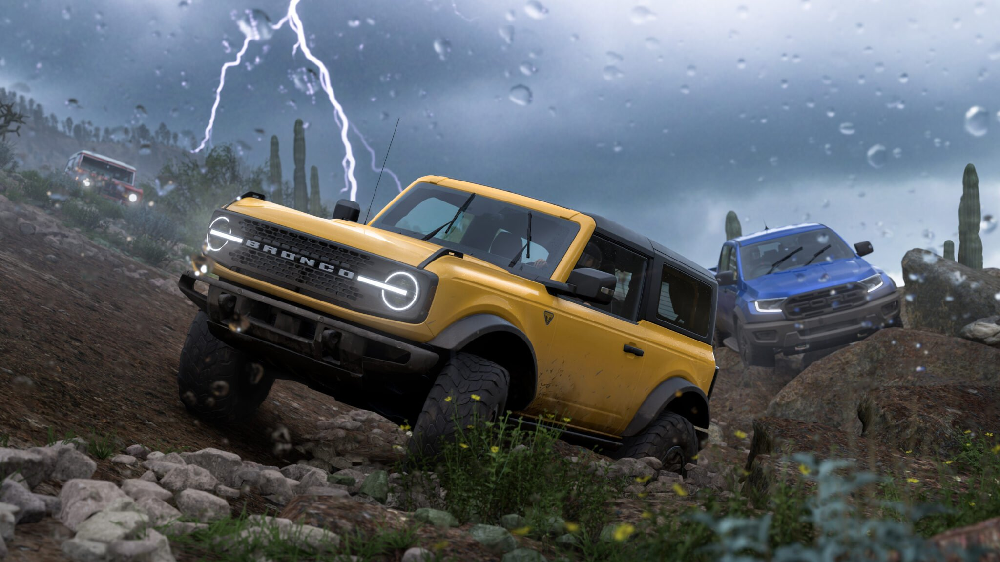
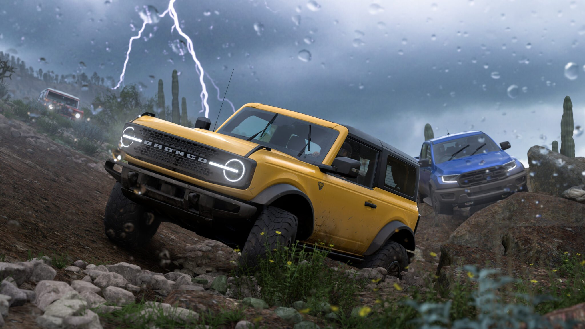

The fifth game in the series is Forza Horizon 5
Forza Horizon 5 is a 2021 racing video game developed by Playground Games and published by Xbox Game Studios. It is the fifth Forza Horizon title and twelfth main instalment in the Forza series. The game is set in a fictionalised representation of Mexico. It was released on 9 November 2021 for Windows, Xbox One, and Xbox Series X/S. The game received critical acclaim and became a commercial success upon release; it launched to over ten million players in the first week, the biggest-ever launch for an Xbox Game Studios game. The game won IGN's Game of the Year award[4] and three jury-voted awards at The Game Awards 2021, tying with Hazelight's It Takes Two for most wins.
 
